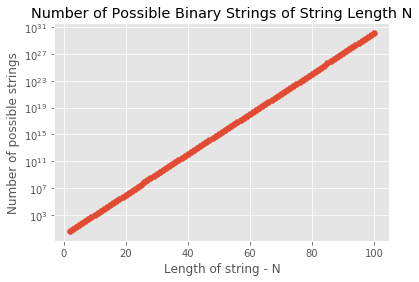

This was a challenge problem set forth in Bioinformatics Algorithms An Active Learning Approach by Phillip Compeau and Pavel Pevzner (2018). I borrow heavily from their examples.
What is the probability that a some k-mer will appear at least \(t\) times as a sub-string of a random string of length \(N\) composed of alphabet \(A\)?
For example, what is the probability that some 9-mer appears 3 or more times in a random DNA string of length 500?
Let \(Pr(N, A, Pattern, t)\) denote the probability that a string \(Pattern\) appears \(t\) or more times in a random string of length \(N\) formed by an alphabet of \(A\) letters.
For example, we can compute \(Pr(4, 2, "01", 2)\) by brute force as follows:
import itertools
import fractions
from numbers import Real
def find_pattern_probability(N: int, A: str, pattern: str, t: int) -> Real:
"""Find the probability of a given substring"""
possible_strings = itertools.product(A, repeat=N)
k = len(pattern)
count = 0
n = 0
for string in possible_strings:
s = "".join(string)
n += 1
occurences = 0
for i in range(len(s)-k+1):
if s[i:i+k] == pattern:
occurences += 1
if occurences >= t:
count += 1
return fractions.Fraction(count, n)
print(find_pattern_probability(N=4, A="01", pattern="01", t=2))1/16
However, this approach becomes computationally intractable as the alphabet and the string length increase. The number of possible strings is defined by the number of permutations with repetition which is, \(A^N\) where \(A\) is the alphabet size (in this case 2) and \(N\) is the string length.
For example, fixing the alphabet size at 2 results in the following number of unique combinations for each string length up to 100
import matplotlib.pyplot as plt
import numpy as np
plt.style.use('ggplot')
%matplotlib inline
A = 2 # alphabet size of binary string ('0', '1')
N = np.array([range(2, 101)]) # string length
possible_strings = np.power(A, N, dtype=float) # number of permutations with replacement for each length
plt.scatter(N, possible_strings)
plt.yscale('log')
plt.xlabel('Length of string - N')
plt.ylabel('Number of possible strings')
plt.title("Number of Possible Binary Strings of String Length N")
plt.show()
This isn’t even the complete story. Another problem arises when we consider that certain combinations appear more frequently than others in a random string, i.e. the overlapping words problem. For example, \(Pr(4,2,"01",2) = 1/16\) whereas \(Pr(4,2,"11",2) = 3/16\) since two occurrences of “01” can never overlap each other in any 4-mer.
Given the high number of possible strings and the fact that overlapping strings occur with different probabilities we need to instead estimate \(Pr(N, A, Pattern, t)\). We can estimate this value by assuming that each sub-string is non-overlapping and then imagine inserting the sub-string \(t\) times within a string. For example, we can insert the sub-string “A” into “XXX” in the following ways:
AXXX
XAXX
XXAX
XXXA
There are 4 ways to insert “A” into “XXX”. Because there are \(3^3 = 27\) possible ternary 3-mers we can approximate the number of ternary 5-mers that contain at least one instance of “A” as \(4 \times 27 = 108\). And because there are \(3^5 = 243\) possible ternary 5-mers we get the estimated \(Pr(5, 3, "A", 1) = 108/243 = 4/9 \approx 44\%\)
From Compeau and Pevzner (2018):
If we select exactly \(t\) of these occurrences, then we can think about \(Text\) as a sequence of \(n = N - t * k\) symbols interrupted by \(t\) insertions of the k-mer \(Pattern\). If we fix these \(n\) symbols, then we wish to count the number of different strings \(Text\) that can be formed by inserting \(t\) occurrences of \(Pattern\) into a string formed by these \(n\) symbols.”
This means that the problem can get broken down into, “How many ways can we choose \(t\) occurrences of a \(Pattern\) in a string of length \(n = N - t * k\)”. In other words, \(n\ Choose\ r\).
Taken together we will have \(n + t\) occurrences of “X”. From these occurrences we wish to choose \(t\) placements. This gives us the binomial coefficient \(n +t \choose t\). Now we need to multiply this by the number of strings from an alphabet \(A\) of length \(n\) that we can insert \(t\) occurrences, \(A^n\). Finally, divide by the total number of possible strings for an alphabet of size \(A\) and length of \(N\). This yields our estimate:
\[Pr(N, A, Pattern, t) \approx \frac{{n+t \choose t} A^n}{A^N} = \frac{{N - t * k + t \choose t} A^{N-t*k}}{A^N} = \frac{{N - t * (k - 1) \choose t}}{A^{t*k}}\]
Now we are ready to develop an approximation
from scipy.special import binom
def approximate_pattern_probability(N: int, A: int, pattern: str, t: int) -> None:
"""Return the approximate probability of substring t in text of length N composed of A symbols"""
k = len(pattern)
numerator = int(binom(N - t * (k - 1), t))
denominator = int(A**(t*k))
frac = fractions.Fraction(numerator, denominator)
Pr = numerator / denominator
print(f"Approximate probability of {t} occurrences of {pattern} in text of length {N} composed of {A} symbols is {frac} or {Pr}")
approximate_pattern_probability(30, 4, "ACTAT", 3)Approximate probability of 3 occurences of ACTAT in text of length 30 composed of 4 symbols is 51/67108864 or 7.599592208862305e-07
This approximation is okay if we know the \(Pattern\). The original question was to approximate the probability of some k-mer appearing \(t\) or more times.
We already have an approximation for the probability \(p\) that some \(Pattern\) appears \(t\) of more times, therefore 1 minus this approximation will give us the probability that the \(Pattern\) does not appear \(t\) or more times. Since we know that there are \(A^k\) possible k-mer patterns, we can approximate the probability that all \(A^k\) patterns appear fewer than \(t\) times in a random string of length \(N\) using \((1 - p)A^k\).
Again, we can flip this probability by subtracting it from 1 in order to approximate the probability that some k-mer appears greater than \(t\) times in a random string of length \(N\): \(Pr(N, A, k, t) \approx 1 - (1 - p)A^k\). Now we can get an estimate for the original question.
Simply plugging this equation into a function will cause an overflow. Therefore we can approximate our estimate by assuming that \(p\) is about the same for every \(Pattern\). Thus we get:
\[Pr(N, A, k, t) \approx p * A^k\]
def approximate_kmer_probability(N: int, A: int, k: int, t: int) -> None:
"""Return the approximate probability that some k-mer appears t or more times in a random string of length N
composed of alphabet size A"""
numerator = int(binom(N - t * (k - 1), t))
denominator = int(A**((t-1)*k))
frac = fractions.Fraction(numerator, denominator)
Pr = float(frac)
print(f"Approximate probability of at least {t} occurrences of {k}-mer in text of length {N} composed of {A} symbols is {frac} or {Pr}")
approximate_kmer_probability(500, 4, 9, 3)Approximate probability of at least 3 occurences of 9-mer in text of length 500 composed of 4 symbols is 4465475/17179869184 or 0.00025992485461756587
To answer the question, the probability that some 9-mer appears 3 or more times in a random DNA string of length 500 should be about 0.000259 however, this number is actually closer to 0.000769 \(\approx 1/1300\) due to the overlapping words problem (Compeau and Pevzner, 2018).